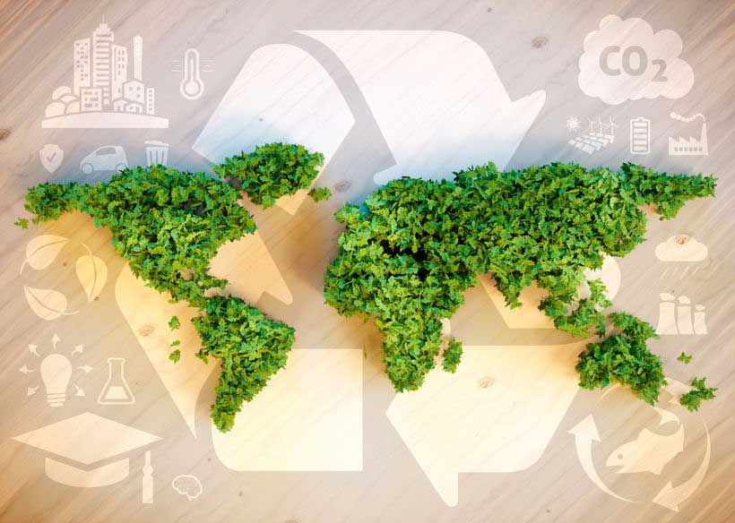

In un contesto globale caratterizzato da sfide sempre più urgenti come il cambiamento climatico, la disuguaglianza sociale e la scarsità delle risorse naturali, gli strumenti della finanza sostenibile rappresentano una risposta innovativa che permette agli investitori di agire come attori responsabili, allineando le loro decisioni con principi di sostenibilità a lungo termine. Tra questi se ne ricordano alcuni:
Obbligazioni Verdi (Green Bonds)
Le obbligazioni verdi sono uno degli strumenti più noti nella finanza sostenibile. Si tratta di titoli di debito emessi da enti pubblici o privati con l’obiettivo di raccogliere fondi da destinare a progetti ambientali, come la produzione di energie rinnovabili, la gestione dei rifiuti o il miglioramento dell’efficienza energetica. Gli investitori in obbligazioni verdi possono essere certi che i fondi raccolti vengano utilizzati per attività che riducono l’impatto ambientale.
Obbligazioni Sociali (Social Bonds)
Le obbligazioni sociali sono simili alle obbligazioni verdi, ma incentrate su aspetti sociali piuttosto che ambientali. Vengono emesse per finanziare progetti che promuovono il benessere sociale, come l’accesso all’educazione, la sanità, o la lotta alla povertà. Gli investitori che acquistano obbligazioni sociali supportano quindi iniziative che migliorano la qualità della vita delle persone, specialmente in contesti vulnerabili.
Obbligazioni Sostenibili (Sustainability Bonds)
Le obbligazioni sostenibili combinano gli obiettivi delle obbligazioni verdi e sociali. Gli emittenti di queste obbligazioni destineranno i proventi sia a progetti ambientali che a progetti sociali. Questo strumento si rivolge a investitori che vogliono un impatto positivo su entrambe le dimensioni: quella ambientale e quella sociale.

Investimenti d’Impresa Sostenibili (Sustainable Business Investments)
Questo strumento si concentra sugli investimenti diretti in imprese che operano secondo principi di sostenibilità. Le aziende che adottano modelli di business sostenibili cercano di creare valore a lungo termine per gli stakeholder, riducendo i rischi ambientali e sociali. Gli investitori che partecipano a queste iniziative sostengono la crescita di imprese che promuovono l’equità e il rispetto dell’ambiente.
Focalizzazione su un Solo Aspetto Positivo
Alcune aziende cercano di mascherare una produzione poco sostenibile concentrandosi su un singolo aspetto positivo del loro prodotto, come l’uso di materiali riciclati, l’assenza di un determinato inquinante, o la biodegradabilità del prodotto. Tuttavia, questa strategia spesso ignora altre aree importanti della sostenibilità, come il consumo energetico, l’impronta di carbonio o l’inquinamento causato durante la produzione. Ad esempio, un’azienda potrebbe promuovere un prodotto come ecologico perché utilizza plastica riciclata, ma non menzionare che il processo produttivo richiede molta energia o che il packaging non è riciclabile. Le aziende che fanno greenwashing puntano a evidenziare un solo aspetto positivo, mentre quelle che sono veramente sostenibili lavorano in modo olistico per ridurre l’impatto ambientale in tutte le fasi del ciclo di vita del prodotto, dal design alla produzione, fino allo smaltimento
Promesse Esagerate e Senza Fondamento
Le dichiarazioni esagerate, come “100% sostenibile”, “totalmente biodegradabile” o “senza plastica”, sono segnali di allarme. Queste promesse spesso sono troppo generiche e mancano di dettagli e prove a supporto. La sostenibilità è un concetto complesso che non può essere ridotto a un’unica, semplice affermazione. Inoltre, molte di queste affermazioni sono facilmente smentibili. Per esempio, “100% biodegradabile” non significa necessariamente che il prodotto non abbia un impatto ambientale: dipende dal tempo necessario per la biodegradazione e dalle condizioni in cui avviene. Le aziende davvero sostenibili evitano di fare promesse assolute e non realistiche, ma forniscono dati e informazioni chiare sui benefici ambientali dei loro prodotti, nonché sui risultati ottenuti in termini di riduzione delle emissioni, del consumo di risorse e degli scarti di produzione.
Mancanza di Trasparenza sull’Intero Ciclo di Vita del Prodotto
Un altro segno rivelatore di greenwashing è la mancanza di trasparenza riguardo al ciclo di vita del prodotto. Le aziende che cercano di ingannare i consumatori spesso non forniscono informazioni su come viene prodotto il prodotto, sulla provenienza delle materie prime o su come viene smaltito alla fine della sua vita utile. Se un’azienda non fornisce informazioni dettagliate sulla sostenibilità della propria supply chain o sul suo impatto ambientale complessivo, è probabile che stia cercando di mascherare le sue carenze con una facciata “verde”. Le aziende responsabili, invece, sono trasparenti e aperte riguardo a tutti gli aspetti del ciclo di vita del prodotto, dalla scelta dei materiali alla produzione, dal trasporto alla gestione dei rifiuti, fino al riciclo o al riutilizzo del prodotto una volta che ha raggiunto la fine della sua vita utile.
